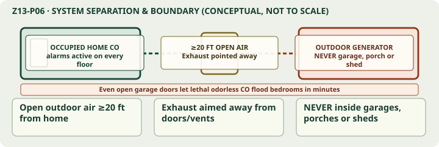

Z13-P06 · Home survival and utilities · New manuscript
Position portable generators strictly outdoors at least 20 feet from buildings
Prevent fatal residential carbon monoxide poisoning from portable fuel-driven generators during outages.
When it applies · Any gasoline, propane, or dual-fuel portable generator operated near homes, cabins, or outbuildings.
Equipment · Heavy-duty outdoor-rated grounded extension cords, CO alarms on every floor inside, and tape measure/open yard clearance.

Actions
- Place a portable generator STRICTLY outdoors in completely open air at least 20 feet away from any home, door, window, crawlspace, or air intake, with the exhaust pipe pointed directly AWAY from occupied structures.[C06, U02]
- NEVER operate a generator inside a basement, attached or detached garage, screened porch, carport, breezeway, or shed—even with garage doors wide open and fans running, lethal CO builds silently inside the house within minutes.[C06, C16, U15]
- Verify working battery-backed carbon monoxide alarms on every level and outside all sleeping areas BEFORE starting any outdoor generator, and recheck wind direction so exhaust never drifts back toward vents or neighbors' windows.[C09, C06, U12]
Failure recognition · Running a generator just outside an open attached-garage door during a snowstorm so wind sweeps odorless CO directly into upstairs bedrooms.[C06, C16]
Verify · Confirm generator sits in open air ≥20 feet away, exhaust points away from all openings, and indoor CO alarms test active.[C06, C09]
Stop or change course · If a CO alarm sounds or poisoning is suspected, get everyone to fresh outdoor air immediately and call 911 from outside. Do not delay to switch off the generator or investigate.[C07, C06]
Evidence and editorial notes
- C06 · CPSC · CPSC Warns of Generator, Carbon Monoxide and Fire Hazards Ahead of Hurricane Season (2026 seasonal agency guidance)
- Section: Prevent CO poisoning > Portable generators · Conditions: Portable fuel-driven generator during an outage
Support: Use outdoors at least 20 feet from the home with exhaust directed away from buildings.
Limitations: Wind eddies, overhanging eaves, and open windows can still draw exhaust toward occupied structures. · Conflicting evidence: None; 20 ft is a minimum floor, not a guarantee in enclosed alleys.
Editorial note: Anchored numeric separation rule for portable generators only. · Specialist reviewer: Electrical and carbon monoxide safety
Primary source · checked 2026-11-24 - C07 · CPSC · Carbon Monoxide Fact Sheet (current web edition)
- Section: CO poisoning symptoms; what to do if suspected · Conditions: Suspected carbon monoxide exposure
Support: Escape to fresh air immediately and contact emergency services. Symptoms can include headache, dizziness, nausea and confusion.
Limitations: CO is colorless and odorless; symptoms mimic viral illness or altitude fatigue and can incapacitate sleepers without waking. · Conflicting evidence: None; aligns with CDC-CO.
Editorial note: Standard CO emergency stop condition across Z02 and Z03. · Specialist reviewer: Carbon monoxide safety and emergency medicine
Primary source · checked 2026-11-24 - C09 · CPSC · CO Alarms (current web edition)
- Section: Installing and maintaining CO alarms · Conditions: U.S. household CO prevention
Support: Install CO alarms on every level and outside sleeping areas. Follow placement and maintenance instructions.
Limitations: Alarms alert to buildup after release begins; they never make indoor fuel-burning appliances safe. · Conflicting evidence: None; complements C05 and C06.
Editorial note: Paired with exit-plan checks in household and shelter cards. · Specialist reviewer: Carbon monoxide safety
Primary source · checked 2026-11-24 - C16 · CDC · Carbon Monoxide Poisoning Basics (current web edition)
- Section: Carbon Monoxide Poisoning Basics > Sources and Prevention · Conditions: Any enclosed or semi-enclosed structure, garage, porch, tent, or vehicle
Support: Never burn charcoal, operate camp stoves, or run fuel-burning heaters inside homes, garages, tents, or vehicles even with doors or windows partly open.
Limitations: Vent cracks and open garage doors do not prevent lethal CO accumulation. · Conflicting evidence: Refutes dangerous myth that cracking a tent vent or garage door makes indoor combustion safe.
Editorial note: Hard-stop rule across all Z02 ventilation and Z03 combustion cards. · Specialist reviewer: Carbon monoxide safety and emergency medicine
Primary source · checked 2026-11-24 - U02 · CPSC · CPSC Warns of Generator, Carbon Monoxide and Fire Hazards Ahead of Hurricane Season (2026 seasonal agency guidance)
- Section: Use portable generators outdoors; keep exhaust away · Conditions: Portable generator during household outage
Support: Run outdoors at least 20 feet from buildings and direct exhaust away. Use approved connections as the manual dictates; licensed electrical work governs transfer to a building. Never backfeed.
Limitations: Distance alone does not guarantee safety. Local code and exact equipment determine installation. · Conflicting evidence: See A02 claim audit for boundaries.
Editorial note: Core electrical isolation boundary across Z13 generator cards. · Specialist reviewer: Licensed electrician and fire safety
Primary source · checked 2026-11-24 - U12 · CPSC · CO Alarms (current web edition)
- Section: Home Alarms > Smoke, Carbon Monoxide, and Battery Backup Readiness · Conditions: Occupied residences with fuel-burning furnaces, water heaters, attached garages, or outage generators
Support: Maintain interconnected or battery-backed CO and smoke alarms on every floor and outside sleeping rooms, replace expired sensors on schedule, and keep exterior furnace/dryer/exhaust vents clear of drifting snow.
Limitations: Blocked high-efficiency PVC furnace intake/exhaust pipes in heavy snow can force CO back indoors or lock out heating systems. · Conflicting evidence: None; integrates with C09 and Z13-R03.
Editorial note: Connects winter snow-drift vent inspection to household CO prevention. · Specialist reviewer: Carbon monoxide safety and residential HVAC
Primary source · checked 2026-11-24 - U15 · CPSC · CPSC Warns of Generator, Carbon Monoxide and Fire Hazards Ahead of Hurricane Season (2026 seasonal agency guidance)
- Section: Generator fire and carbon monoxide safety; operation and refueling · Conditions: Portable generator in open air, manual and site permit its use
Support: Keep equipment dry and use manufacturer-permitted protection only if it preserves safe outdoor placement. Refuel with the engine off after cooling.
Limitations: No universal canopy or grounding scheme; ask a licensed electrician and keep evacuation ahead of shutdown after possible indoor exhaust exposure. · Conflicting evidence: See A02 claim audit for boundaries.
Editorial note: Covers wet-weather generator enclosures, refueling cooldown, and shock prevention. · Specialist reviewer: Electrical safety and fire prevention
Primary source · checked 2026-11-24
Source lineage · CPSC Generator Safety and NFPA; new manuscript · Classification · New manuscript.